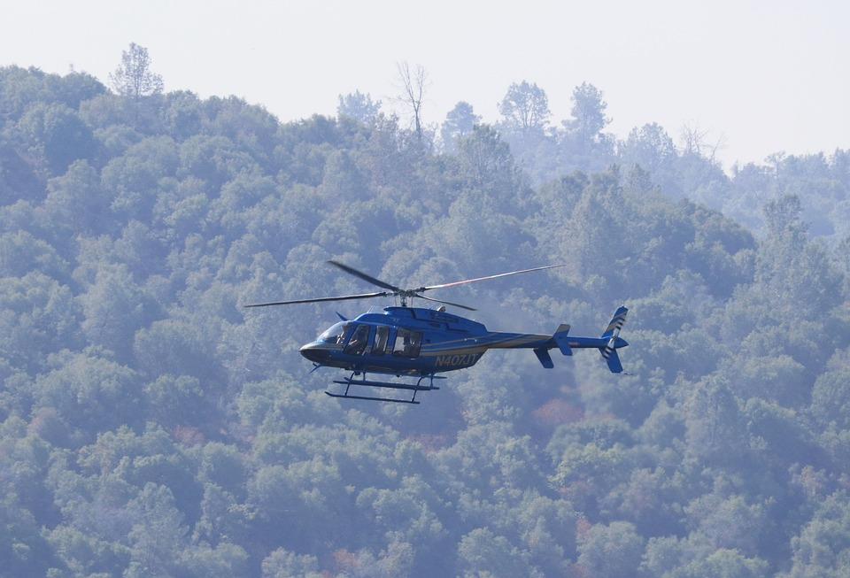
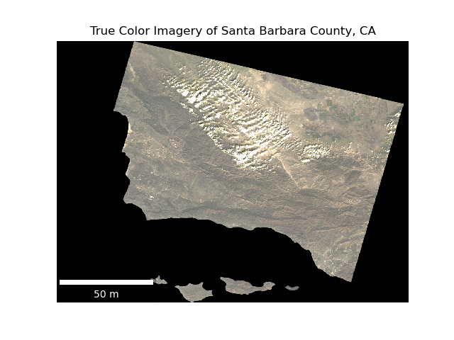
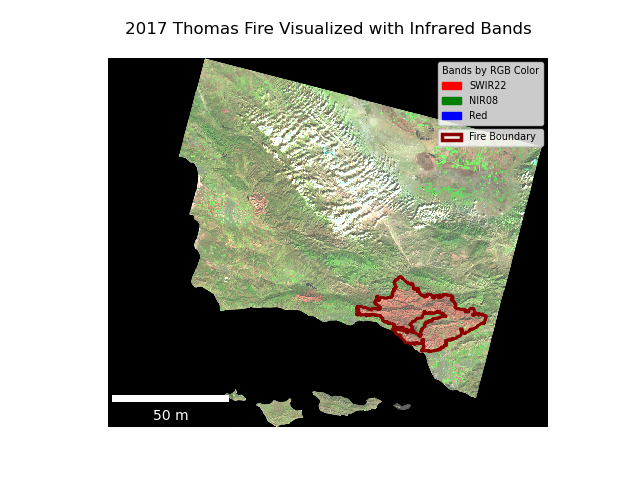

# Subset for 2017 Thomas Fire
thomas_perim = fire_perim[(fire_perim['fire_name'].str.contains('thomas')) &
(fire_perim['year'] == 2017)]
# Make folder to save shapefile
if not os.path.exists('data/thomas_perim'):
os.makedirs('data/thomas_perim')
# Save subset as .shp
thomas_perim.to_file('data/thomas_perim/thomas_perim.shp')The Scar Left by the 2017 Santa Barbara and Ventura Thomas Fire
Wildfire
Python
Pandas
Geopandas
Xarray
Final project for EDS 220 @ Bren School UCSB
GitHub
All relevant files and figures can be found here.
https://github.com/silkieMoth/eds220-hwk4
About

Forest fires are a whale in the California ecosystem with 7,668 wildland fires occurring each year (CAL FIRE, 2024) with the impacts of wildfires becoming greater with climate change (McKenzie et al., 2004).
The Thomas Fire was a wildfire that was particularly notable for it’s sheer size. In 2017 when it burned through 281,893, it asserted itself as the largest CA wildfire in history at the time. To this day, even as wildfires increase in severity, it still remains the 8th largest wildfire to date as of November 30, 2024.
The goal of this analysis is to map the impact of the 2017 Thomas Fire relative to the rest of Santa Barbara County. Because the fire left a ‘scar’ that is visible from space, it shows up in satellite imagery. Landsat data can capture this damage, as the infrared reluctance of burned land is high.
Cross-referencing the Thomas Fire perimeter and the Landsat imagery allows us to visualize the scar left behind.
Highlights of Analysis
- Subsetting of of CA fire perimeter dataset
- Selected for 2017 Thomas Fire
- Saved out to new shapefile
- Initial processing of Landsat imagery
- NetCDF file only had one band
- Therefore, utilizing
squeeze()anddrop_vars,the ‘band’ dimension was removed
- Therefore, utilizing
- NetCDF file only had one band
- Mapping of the Landsat imagery in true color
- The red, green, and blue bands were fitted accordingly
- False color mapping of Landsat imagery with infrared
- Plotting with infrared in colored bands allows visualization of Thomas Fire damage
- Short-wave infrared in red band
- SWIR’s reflectance correlates with moisture in plants and soil. A dry environment like a newly burned forest will reflect greatly.
- Near Infrared in green band
- This is useful for analysis as much like plants reflect green light, they reflect NIR very strongly, particularly healthy vegetation.
- Short-wave infrared in red band
- Plotting with infrared in colored bands allows visualization of Thomas Fire damage
Dataset Descriptions
This analysis incorporates two datasets:
- California Historical Fire Perimeters
- Acquired from the California Natural Resources Agency
- Data on fires dating back to 1898.
- Over 15000 entries.
- Each row corresponds to single polygon representing a perimeter for a given fire.
- Landsat imagery of Santa Barbara County
- Data array from Landsat Collection 2 Level-2.
- Collected on January 26, 2018.
- Pre-processed, reduced resolution and extent to Santa Barbara County.
- Included variables:
- Visible light spectrum
- RGB
- Infrared
- NIR08 (Near)
- SWIR22 (Short-Wave)
- Visible light spectrum
- Included dimensions
- band
- Notes number of bands
- Length = 1
- x
- Longitude
- Length = 870
- y
- Latitude
- Length = 731
- band
Data Access
California_Fire_Perimeters_(1950+)can be downloaded from California Natural Resources agency website.landsat8-2018-01-26-sb-simplifiedis a pre-processed file and the only way to access it is through University of California, Santa Barbara’s Posit Workbench server. However, a similar Landsat image of Santa Barbara can be downloaded from the Microsoft Planetary Computer data catalogue.
Analysis
Subset and saving of the 2017 Thomas Fire shapefile
Subset for the 2017 Thomas Fire record and save to .shp format.
Landsat data cleaning
Because there is only one band in the dataArray, we can drop the band dimension. This will prevent plotting errors.
# Drop `band` dimension
landsat_bandless = landsat.squeeze().drop_vars('band')True color visualization of Santa Barbara County
Landsat imagery contains standard RGB bands, allowing true color plotting.
# Create false color dataArray
true_col = landsat_bandless[['red', 'green', 'blue']]
# Plot landsat bands adjusting for cloud cover
fig, ax = plt.subplots()
ax.axis('off')
true_col.to_array().plot.imshow(robust = True)
# create scalebar
ax.add_artist(ScaleBar(0.08,
"cm",
length_fraction = 0.30,
width_fraction = 0.02,
location = 'lower left',
box_alpha = 0.2,
box_color = 'k',
color = 'w'))
ax.set_title('True Color Imagery of Santa Barbara County, CA')False color visualization of Thomas Fire damage with infrared reflectance and fire perimeter
Placing short-wave infrared and near infrared over red and green highlights freshly burned patches of land.
# Create false color dataArray
false_col = landsat_bandless[['swir22', 'nir08', 'red']]
# Plot landsat bands adjusting for cloud cover
fig, ax = plt.subplots()
ax.axis('off')
false_col.to_array().plot.imshow(ax = ax,
robust = True)
# Init legend for landsat bands
legend_labels = [Patch(color = 'red', label = 'SWIR22'),
Patch(color = 'green', label = 'NIR08'),
Patch(color = 'blue', label = 'Red')]
# Declare legend variable for landsat bands
legend = ax.legend(handles = legend_labels,
loc = 'upper right',
title = 'Bands by RGB Color',
alignment = 'left',
fontsize = 'x-small',
title_fontsize = 'x-small')
# create scalebar
ax.add_artist(ScaleBar(0.08,
"cm",
length_fraction = 0.30,
width_fraction = 0.02,
location = 'lower left',
box_alpha = 0.2,
box_color = 'k',
color = 'w'))
ax.set_title('False Color Imagery of Santa Barbara County, CA')Final Visualizations

This image has the red, green, and blue variables mapped to their respective colors. Because vegetation reflects green light, one can make out somewhat where the vegetation is or isn’t. However, the 2017 Thomas Fire damage is hardly visible.

This false color raster plots short-wave infrared and near infrared on the red and green colors respectively. By utilizing infrared light reflectance, the difference between the vegetation rich areas and the vegetation poor areas becomes significantly more distinct. The Thomas Fire damage is now distinctly visible, as SWIR reflects greatly under recently burned areas, and NIR reflects best under healthy vegetation.
Citations
In-Text
CAL FIRE. (2024, November 15). Statistics. State of California. https://www.fire.ca.gov/our-impact/statistics
McKenzie, D., Gedalof, Z., Peterson, D.L. and Mote, P. (2004), Climatic Change, Wildfire, and Conservation. Conservation Biology, 18: 890-902. https://doi.org/10.1111/j.1523-1739.2004.00492.x
Data
Earth Resources Observation and Science (EROS) Center. (2020). Landsat 8-9 Operational Land Imager / Thermal Infrared Sensor Level-2, Collection 2 [dataset]. U.S. Geological Survey. Link
California Department of Forestry and Fire Protection (2024), California Historical Fire Perimeters [dataset]. California Natural Resources Agency.Link
Citation
BibTeX citation:
@online{paulcohen2024,
author = {Joshua Paul Cohen},
title = {The {Scar} {Left} by the 2017 {Santa} {Barbara} and {Ventura}
{Thomas} {Fire}},
date = {2024-11-30},
url = {https://silkiemoth.github.io/},
langid = {en}
}
For attribution, please cite this work as:
Joshua Paul Cohen. 2024. “The Scar Left by the 2017 Santa Barbara
and Ventura Thomas Fire.” November 30, 2024. https://silkiemoth.github.io/.